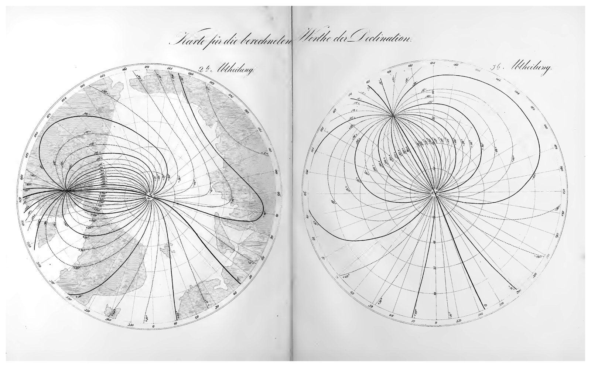
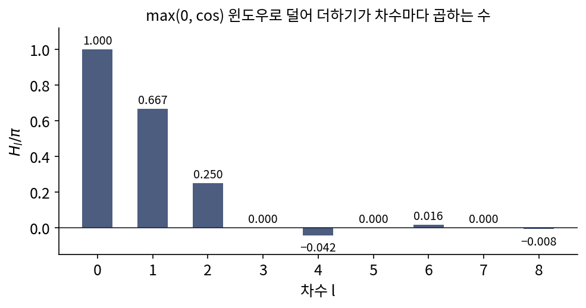
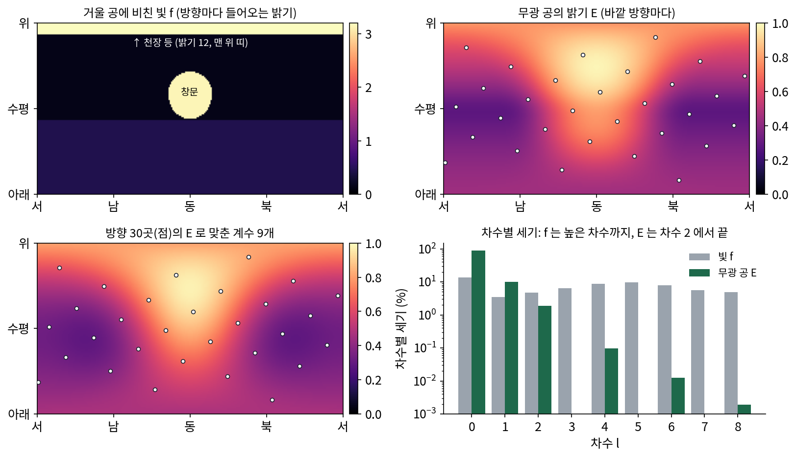
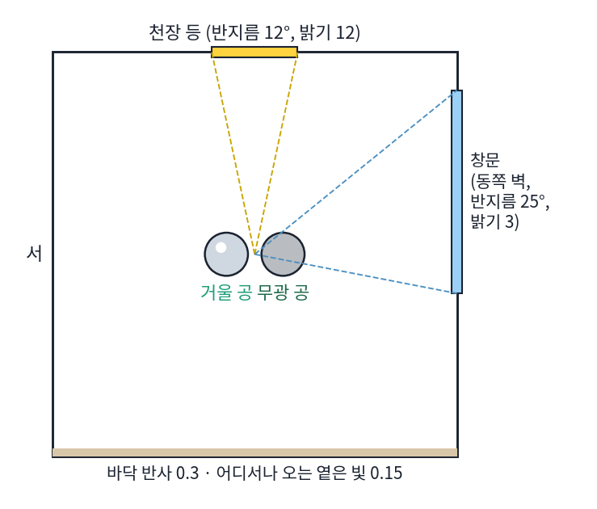
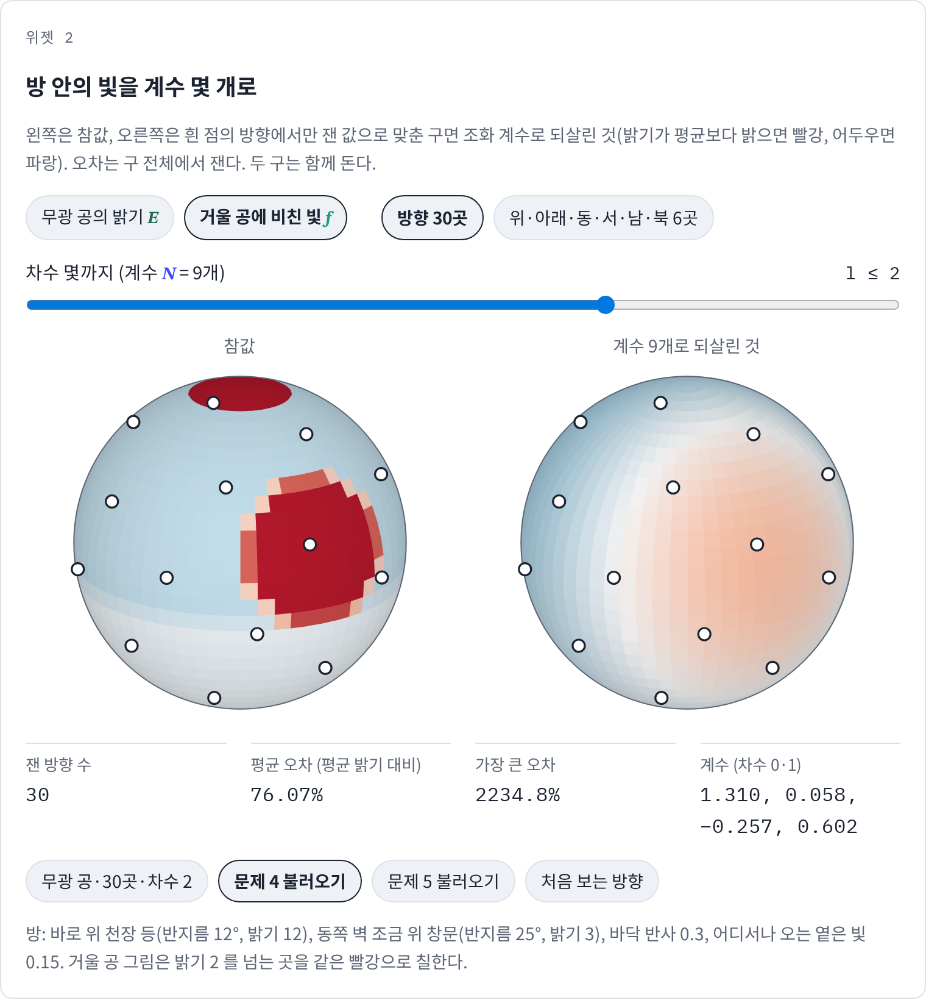
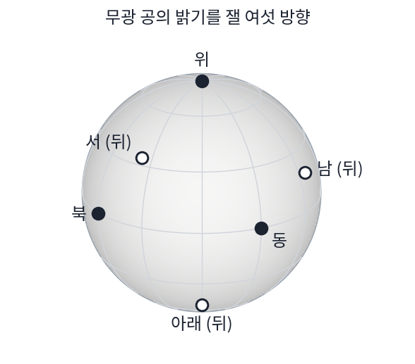
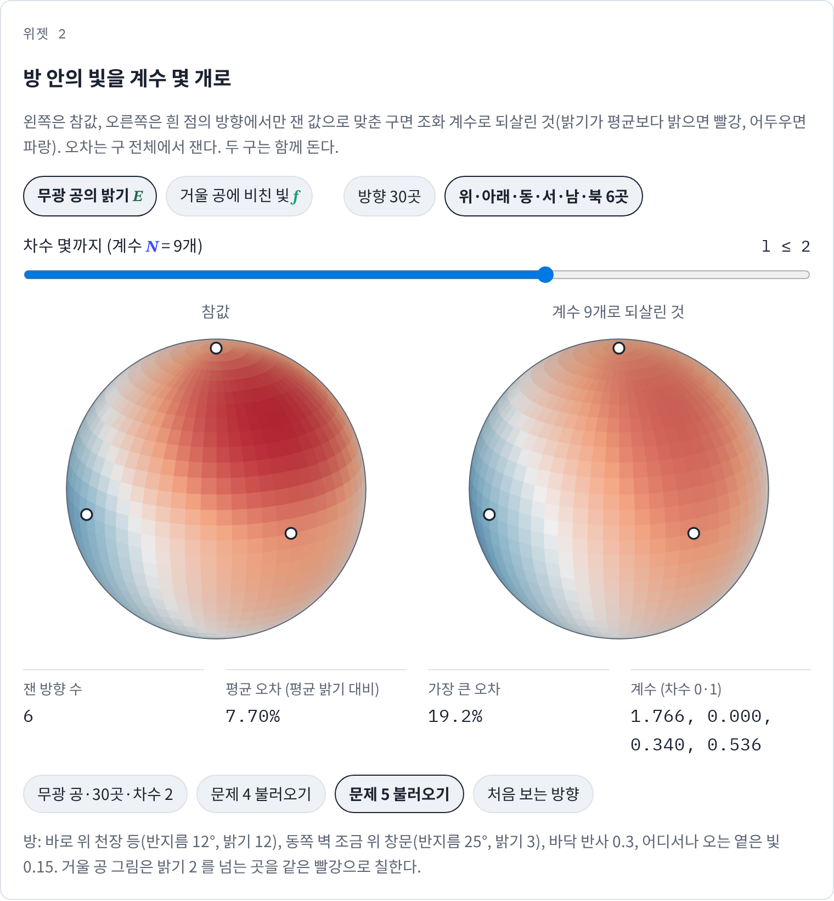
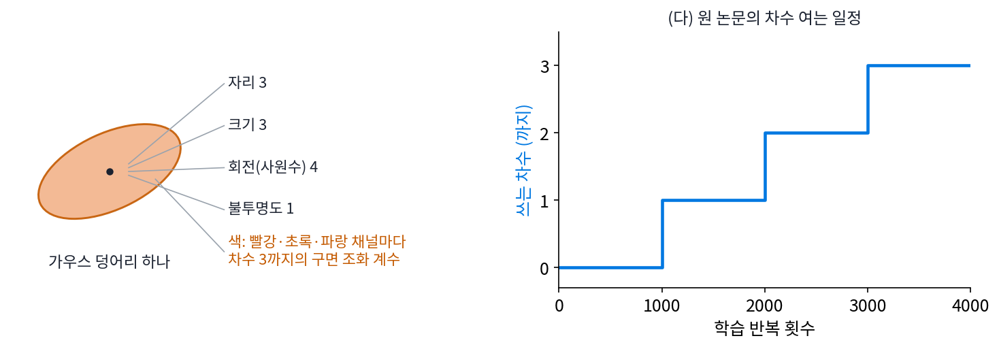

구면 조화 전개: 방 안의 빛을 계수 아홉 개로
영화나 게임 장면에 매끈한 회색 공을 하나 놓았다고 하자. 공의 겉 한 점이 얼마나 밝은지 알려면, 그 점이 바라보는 반구의 모든 방향에서 들어오는 빛을 비스듬한 정도에 따라 더해야 한다. 화면의 점마다 수천 방향을 더하는 일은 너무 비싸다. 거꾸로 실제 방의 빛을 재는 쪽도, 측정기를 돌려 가며 잴 수 있는 방향이 몇십 곳뿐이라 막힌다. 방향마다 다른 밝기를 숫자 몇 개로 적을 수 있다면 두 일이 모두 쉬워진다. 구면 조화가 구 위의 물결이라면, 구 위의 함수를 구면 조화 몇 개의 합으로 적을 수 있지 않을까?
역사: 흩어진 관측소에서 지구 자기장으로, 그리고 확산 조명으로
흩어진 곳에서 잰 값으로 구 위의 함수를 계수 몇 개에 담은 첫 큰 일은 지구 자기장이다. 1830년대 가우스(Carl Friedrich Gauss)와 베버(Wilhelm Weber)는 여러 나라의 관측소를 묶어 같은 시각에 자기장을 재게 했다. 가우스는 1839년 「지자기의 일반 이론」에서 자기장을 구면 조화 전개로 적고, 지도에 모인 세기·복각·편각 관측에 최소 제곱으로 맞춰 계수를 구했다. 전개는 차수 4에서 끊어, 차수 1부터 4까지 3 + 5 + 7 + 9 = 24개의 계수를 썼다. 그는 관측이 그보다 많은 항을 뒷받침하지 못한다고 보았다. 그리고 땅속에서 나오는 성분만으로 적은 전개가 관측과 잘 맞는다는 것에서 자기장의 근원이 땅속에 있다고 결론지었다. 계수 24개는 지구 자기장의 지도이자, 그 자기장이 땅속에서 온다는 증거였다.

160년쯤 뒤, 컴퓨터 그래픽에서 같은 생각이 다시 쓰였다. 라마무르티(Ravi Ramamoorthi)와 한라한(Pat Hanrahan)은 2001년 SIGGRAPH 에 「복사 조도 환경 지도의 효율적 표현(An Efficient Representation for Irradiance Environment Maps)」을 냈다. 이 논문에서 이들은 무광 물체의 밝기가 먼 곳 빛의 높은 주파수에 거의 영향을 받지 않는다는 것을 보였다. 빛의 구면 조화 계수 가운데 가장 낮은 9개만 써도 평균 오차가 약 1%라는 것이다. 9개 계수로 적은 밝기는 겉면 방향 (x, y, z)의 2차 다항식이 되므로, 화소마다 수천 방향을 더하는 대신 곱셈 몇 번으로 계산할 수 있다.

계수 24개를 최소 제곱으로 맞추는 건 numpy 한 줄이잖아요. 차수를 더 올리면 더 잘 맞았을 텐데 왜 4에서 멈췄어요?

민준 학생이 한 줄로 푸는 그 일, 모르는 수 24개짜리 연립 방정식을 가우스는 손으로 풀었어요. 그런데 손이 모자란 것 말고도 멈춘 이유가 소절에 하나 더 있죠?

관측이 그보다 많은 항을 뒷받침하지 못한다고 봤다는 거요. 음, 잰 곳이 몇 군데 안 되면 계수를 늘려도 정할 수가 없다는 뜻이겠죠.

그래요. 그 관측도 가우스와 베버가 여러 나라의 관측소를 묶어 같은 시각에 재게 하면서 겨우 모인 거예요. 자기장은 시시각각 조금씩 흔들려서, 시각이 어긋난 값을 모으면 서로 다른 순간의 지구를 한 지도에 섞게 되거든요.

데이터를 모으는 일부터가 여러 나라가 함께한 일이었네요. 지금은 위성이 지구를 돌면서 잴 텐데.
160년쯤 뒤 그래픽 쪽은 사정이 거꾸로였어요. 빛을 재는 방향은 얼마든지 많은데, 화소마다 수천 방향을 더할 시간이 없었죠.

가우스는 잰 값이 모자랐고 그래픽 쪽은 계산할 시간이 모자랐는데, 둘 다 계수 몇 개로 끝냈네요. 그럼 몇 개면 되는지는 무엇이 정해요? 잰 곳의 수예요, 아니면 그 함수 자체예요?
방향 30곳에서 잰 밝기를 계수 9개로
방을 하나 정한다. 바로 위에 반지름 12°로 보이는 천장 등(밝기 12), 동쪽 벽 조금 위에 반지름 25°로 보이는 창문(밝기 3), 바닥에서 올라오는 반사 0.3, 어디서나 오는 옅은 빛 0.15. 방 한가운데에 거울 공을 두면 공에 비친 모습이 그대로 「방향마다 들어오는 빛」이다. 무광 공을 두면 공의 겉 한 점은 그 점이 바라보는 반구에서 오는 빛을 비스듬한 정도(코사인)만큼 덜어 더한 밝기로 보인다. 무광 공의 밝기는 가장 밝은 곳 0.981, 가장 어두운 곳 0.282, 평균 0.536이다. 천장 등이 12였던 거울 공보다 훨씬 고르다.
이제 무광 공의 밝기를 방향 30곳에서만 쟀다고 하자. 30곳은 구 위에 고르게 퍼지도록 나선을 따라 놓았다(피보나치 나선, 무작위가 아니다). 30곳의 값으로 차수 0, 1, 2, 3까지의 구면 조화 계수를 최소 제곱으로 맞추고, 그 계수로 되살린 밝기와 참값의 차이(복원 오차)를 구 전체에서 쟀다. 오차는 평균 밝기 0.536에 대한 백분율로 적는다.
| 차수 몇까지 | 계수 수 | 평균 오차 (평균 밝기 대비) | 가장 큰 오차 |
|---|---|---|---|
| 0 | 1 | 31.35% | 82.9% |
| 1 | 4 | 11.93% | 37.5% |
| 2 | 9 | 2.98% | 8.9% |
| 3 | 16 | 2.99% | 9.2% |
계수 1개(평균 하나)로는 31%가 어긋나고, 차수 1까지 4개면 12%, 차수 2까지 9개면 3%다. 그런데 차수 3을 더해 16개로 늘려도 3%에서 꿈쩍하지 않는다. 9개로 맞춘 계수는 차수 0이 1.8996, 차수 1이 (−0.0009, 0.3401, 0.5359), 차수 2가 (−0.0001, −0.0016, 0.1625, 0.1022, 0.1991)이다. 차수 1의 z 계수 0.3401은 위가 밝다는 것을, x 계수 0.5359는 동쪽(창문 쪽)이 밝다는 것을 말한다.
구 위의 함수를 구면 조화의 합으로 다시 적은 것을 구면 조화 전개 (방향의 함수를 계수로 다시 적기 / spherical harmonic expansion)라 한다. 계수는 푸리에 급수에서처럼 내적, 곧 함수와 기저를 곱해 구 전체에서 적분한 값이다.
왜 무광 공은 9개로 충분하고 16개로도 나아지지 않았을까? 무광 공의 밝기는 빛 f를 「max(0, cos)」 모양의 윈도우로 덜어 더한 것이다. 구의 어느 점에서나 같은 모양의 윈도우이므로, 작은 원 평균처럼 구를 어떻게 돌려 놓고 해도 결과가 같은 연산이다. 그래서 무광 공 밝기의 계수 Eₗₘ는 빛의 계수 aₗₘ에 차수마다 정해진 수 Hₗ를 곱한 것이 된다(구면 조화 전개 식의 셋째 등식 Eₗₘ = Hₗ aₗₘ). 줄 위의 합성곱이 주파수마다 곱하기였던 것과 같은 구조다. 차수별 응답 Hₗ를 π로 나눈 값은 차수 0부터 1, 0.667, 0.250, 0, −0.042, 0, 0.016이다.

차수 3에는 0이 곱해지니, 계수를 16개로 늘려 차수 3을 넣어도 맞출 것이 없었다. 남은 3%는 차수 4(−0.042배)와 그 위에서 온다. 빛 f 쪽에서 보면 차수 2까지의 세기가 전체 세기의 21.9%뿐이고 나머지는 높은 차수에 흩어져 있지만, 무광 공의 밝기에서는 차수 2까지가 99.887%다. 몇 개면 되는지를 정한 것은 함수를 만든 연산이 차수마다 곱하는 수였다. 라마무르티와 한라한이 실제 환경에서 잰 빛으로 계산한 평균 오차는 약 1%였고, 이 방에서는 천장 등이 바로 위에 좁고 밝게 있어 3%쯤 나왔다.

ML에서: 3D 가우스 스플래팅의 방향별 색
사진 수십 장으로 장면을 다시 짓는 3D 가우스 스플래팅(케르블(Bernhard Kerbl)과 동료들, 2023)은 장면을 아주 많은 작은 가우스 덩어리로 적는다. 덩어리마다 자리, 크기, 회전, 불투명도와 함께 색을 갖는데, 반짝이는 면은 보는 방향에 따라 색이 달라 보이므로 색을 방향의 함수, 곧 구면 조화 계수로 적는다. 논문은 이 방법을 「표준 관행을 따른」 것이라 적었고, 공개 코드의 기본 설정은 차수 3까지다. 덩어리 하나가 색에 숫자를 몇 개 쓰는지, 왜 학습을 차수 0부터 시작하는지는 아래 문제 6에서 따진다.
문제 4. 거울 공과 무광 공
같은 방, 같은 방향 30곳에서 이번에는 거울 공에 비친 빛(방향마다 들어오는 밝기)을 잰다. (가) 30곳 가운데 천장 등이 보이는 곳은 몇 곳인가? (나) 30곳의 값으로 차수 2 까지 계수 9개를 맞추면 평균 오차는 얼마인가? (다) 30곳 대신 구 전체에서 적분해 계수를 정확하게 구하면 나아지는가? 차수 4(25개), 8(81개)이면? (위젯 2의 「문제 4 불러오기」로 확인해 보자.)

무광 공이 3%였으니까 거울 공도 비슷하겠죠. 같은 방이잖아요.
30곳의 값을 먼저 봐요. 밝기 12인 곳이 몇 군데예요?
하나도 없어요! 천장 등이 반지름 12°라서 30곳 사이로 빠졌어요. 창문이 보이는 곳은 한 곳이고요. 계수 9개를 맞추면 평균 오차가 76.07%예요. 등이 있는지도 모르는 거죠.
(다)는 구 전체에서 정확하게 적분하면 등을 놓치지는 않아. 그런데 계수 9개로는 평균 오차가 99.63%, 25개로 99.08%, 81개로도 77.28%야. 9개로 되살린 값의 가장 큰 값이 1.529라 12짜리 등이 넓게 번진 얼룩이 돼.
무광 공은 왜 9개로 됐는지 떠올려 봐요. 같은 방인데 두 공이 다른 점이 뭐죠?

무광 공은 빛을 max(0, cos) 윈도우로 덜어 더한 거였어요. 그 윈도우가 높은 차수에 거의 0을 곱했고요. 거울 공에는 그 윈도우가 없네요.

응, 빛을 그대로 비추니까 등과 창문의 날카로운 가장자리를 담은 높은 차수가 그대로 남아. 그래서 낮은 차수 몇 개로는 안 되는 거야.

기숙사 옆방 음악이 벽 너머로는 베이스만 쿵쿵 들리는 거랑 같네요. 벽이 높은 소리를 걸러 주니까 무광 공처럼 낮은 차수 몇 개로 되고, 방 안에서 바로 듣는 소리는 거울 공처럼 높은 소리까지 다 남아요.

문제 5. 위·아래·동·서·남·북 6곳만 재면
무광 공의 밝기를 위, 아래, 동, 서, 남, 북 여섯 방향에서만 잰다. (가) 차수 2 까지 계수 9개를 정할 수 있는가? (나) 여섯 방향에서 값이 모두 0 인 구면 조화가 있는가? 있다면 무엇인가? (다) 여섯 값으로 맞춘 계수의 평균 오차는 30곳일 때보다 얼마나 큰가? 차수 3 까지 16개로 맞추면 나아지는가? (위젯 2의 「문제 5 불러오기」로 확인해 보자.)

(가)는 방정식 6개에 모르는 수 9개라 정할 수 없어요.
그래도 최소 제곱을 돌리면 답은 나오던데. 평균 오차 7.70%야.
정하지 못한 세 수가 어디로 갔는지 봐요. 여섯 방향에서 xy는 얼마죠?

위·아래는 x = y = 0, 동·서는 y = 0, 남·북은 x = 0이라 모두 0이에요. yz와 xz도 마찬가지고요. xy, yz, xz 꼴은 얼마를 더해도 여섯 값이 안 바뀌니까, 컴퓨터는 그냥 0으로 놓은 거네요.
참값에서는 xz 꼴 계수가 0.099라서 0이 아니야. 그걸 못 본 데다, 3z² − 1 계수도 0.1808로 참값 0.1655에서 벗어났어. 높은 차수 성분이 여섯 점에서는 낮은 차수처럼 보여서 섞여 들어온 거야.
그럼 계수를 16개로 늘리면 어떨까요?
높은 차수 성분이 낮은 차수 자리로 섞여 들어온 거니까, 차수 3 칸을 열어 주면 그 성분이 제 칸으로 가서 차수 2 계수가 깨끗해질 것 같아요.

돌려 볼게. … 22.97%야. 오히려 세 배나 나빠졌어.

칸을 더 열어 줬는데 왜 나빠지죠? 아, 숫자는 여전히 여섯 개인데 모르는 수가 16개가 됐네요. 열어 준 칸의 값을 정해 줄 재료가 없으니 엉뚱한 값을 지어낸 거예요.
그럼 몇 차수까지 믿을 수 있는지는 무엇이 정할까요?

몇 곳에서 쟀나요. 샘플링할 때 칸 간격이 넓으면 빠른 물결이 느린 물결로 보이던 에일리어싱이랑 같아요. 30곳이면 9개를 넉넉히 정할 수 있었고요.

문제 6. 가우스 덩어리 하나의 색 숫자
3D 가우스 스플래팅은 덩어리마다 빨강·초록·파랑 세 채널의 색을 각각 차수 3 까지의 구면 조화 계수로 적는다. (가) 한 채널에 계수가 몇 개이고, 덩어리 하나의 색 숫자는 모두 몇 개인가? (나) 색 말고 자리 3, 크기 3, 회전(사원수) 4, 불투명도 1 개를 더 가진다. 덩어리 하나의 숫자 가운데 색이 차지하는 비율은? 덩어리 100만 개를 32비트 실수로 저장하면 색에 몇 MB 가 드는가? 차수 0 만 쓰면? (다) 원 논문은 학습을 차수 0 계수만으로 시작하고, 1000번 반복마다 차수를 하나씩 더해 차수 3 까지 늘렸다. 왜 처음부터 차수 3 을 다 쓰지 않았을까?

(가)는 차수 0, 1, 2, 3이니까 1 + 3 + 5 + 7 = 16개, 세 채널이면 48개요. (나)는 색 아닌 게 11개라 모두 59개, 색이 81.4%예요. 100만 개면 색만 192 MB, 차수 0이면 12 MB요.
저장 공간 대부분이 색이네.
(다)는 학습을 빨리 하려고 그런 거 아닐까요? 처음엔 적은 숫자로 대충 맞추고 나중에 다듬는 워밍업처럼요.
방 구석을 찍거나 방 안에서 바깥쪽으로 둘러 찍으면, 덩어리 하나를 비추는 사진의 방향이 한쪽에 몰려요. 논문은 그런 장면에서 차수 0 성분이 아예 틀린 값으로 간다고 적었어요. 학습 시간만 줄이려던 것이라면 이런 말이 나올까요?
느려지는 게 아니라 틀린 값으로 간다는 거네요. 덩어리 하나를 비추는 방향이 한쪽에만 있으면… 문제 5의 여섯 방향처럼 잰 방향이 모자란 거예요.
문제 5에서 숫자 몇 개로 계수 16개를 맞추면 어떻게 됐죠?
엉뚱한 값을 지어냈어요. 그 엉뚱한 값이 평균 색인 차수 0까지 끌고 가는 거네요.

그럼 평균 색부터 정해 두고 차수를 하나씩 여는 건, 잰 방향이 감당할 만큼만 계수를 믿는 방법이겠네요.

그래요. 논문은 이것을 「각도 정보가 모자라면 계수 학습이 흔들린다」고 적었어요. 낮은 차수부터 여는 일정은 잰 방향 수보다 많은 계수를 한꺼번에 믿지 않게 하는 장치예요.